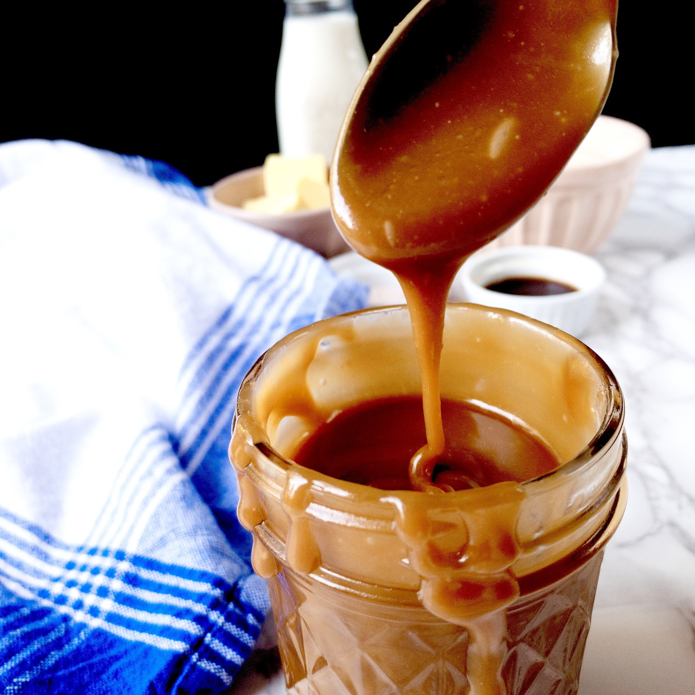

Caramel Sauce

A creamy delight that will have you coming back for more!
This is a caramel recipe that is remarkably simple to pull off. All you need
is 5 ingredients and patience. Be sure to take your time because you dont
want to rush this!
Ingredients
- 6oz of solid butter
- 1 cup of heavy cream
- 2 cups of white sugar
- 1/2 cup of water
- 2 teaspoons of salt
Steps
- Combine water and sugar in a small saucepot. Put on very low
heat and let the sugar dissolve fully, stirring occasionally.
- While you wait on the sugar, set out your butter and heavy cream so that
they become room temperature. I recommend cutting the butter into small cubes.
- Once the sugar has dissolved, turn the heat up until you get a low simmer.
The slower you go here the better. At this stage I like to keep a small pastry
brush and a bit of water on hand so that I can dissolve any sugar crystals
that may form on the side of the pot.
- Keep simmering until your mixture is a dark amber color.
- Carefully add your butter to the mixture. Beware of
splashing. Molten sugar is not a joke.
- Once the butter has been fully incorporated into the mixture, add your heavy
cream and return to a low simmer.
- Once a simmer is achieved, add your salt and stir thoroughly to make sure it
dissolves.